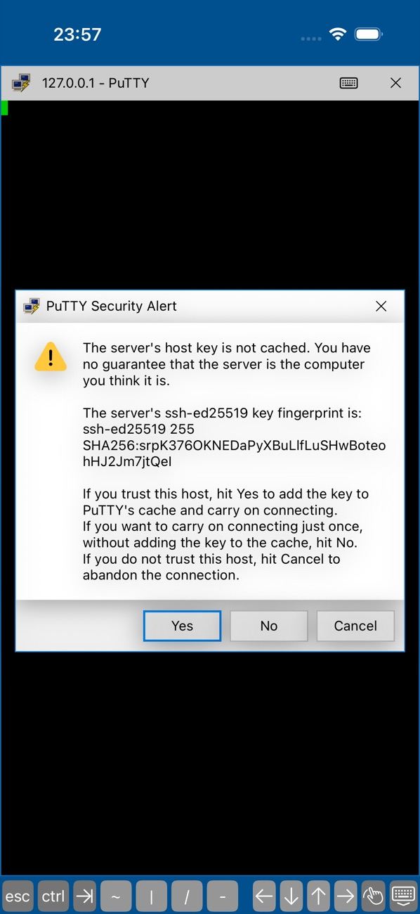
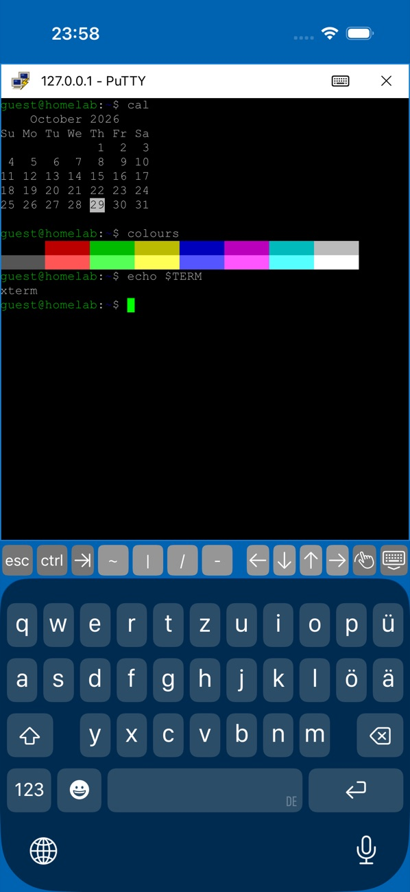
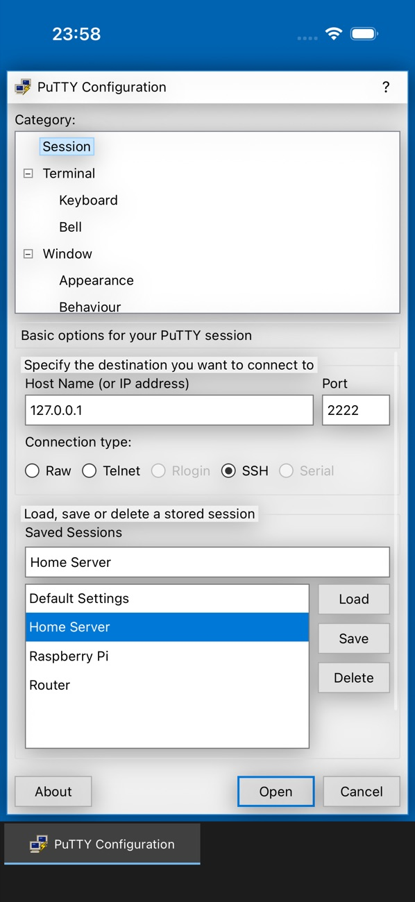

Log in the PuTTY way
login as: and user@host's password: right in the terminal, asked again after “Access denied”.
The SSH client you know, now on iPhone and iPad.
Free, open source, and nothing is logged.


Category tree, host name and port, connection type, saved sessions with Load, Save and Delete. Everything sits where years of PuTTY taught your hands to look, sized for a finger instead of a mouse.

Before anything is sent, PuTTY shows the server's SHA256 fingerprint and waits for you. Accept it once, cache it for good, or walk away. If a known key ever changes, you get the loud warning.
A full xterm with PuTTY's sixteen colours and the green block cursor. Esc, Ctrl, Tab and arrow keys sit above the keyboard, pinch to change the font size, and keep several sessions open at once.
login as: and user@host's password: right in the terminal, asked again after “Access denied”.
OpenSSH and PuTTY .ppk files, Ed25519 and RSA. Passphrases are asked at login, never stored.
For switches, routers and the old box under the desk.
Local echo, Backspace as ^H or ^?, bell, cursor, font, colour schemes, keepalives.
MIT licensed Swift. Read it, build it yourself, or send a fix.
No event log, no session logs, no analytics. Saved sessions hold settings only. Private keys stay in the iOS Keychain.
Keep more than one open and switch between them from the taskbar.
The IPA is unsigned. Pick the tool you use to sideload.
SHA-256
c594f94df6bbfc22428cc3313cc7c33b4fd9eef3525caccf6f1a3977c127f15d
No. It is an independent, unofficial app modelled on PuTTY by Simon Tatham. The code is new Swift, released under the MIT licence.
RSA user keys are signed with SHA-1, which OpenSSH 8.8 and later reject by default. Use an Ed25519 key. RSA host keys and password logins are not affected.
Password and public key. Keyboard-interactive is not supported, so a server that offers only that method will not accept a password.
iOS suspends apps it cannot see. A connection survives a short switch of about 30 seconds; after that iOS closes it, and Restart Session brings it back.
Your saved sessions and cached host keys. Private keys sit in the iOS Keychain. Passwords, passphrases and everything you type are never written down.
iOS gives apps neither the privileged ports Rlogin needs nor serial lines. Encrypted .ppk version 3 keys are not read yet; version 2 keys are.